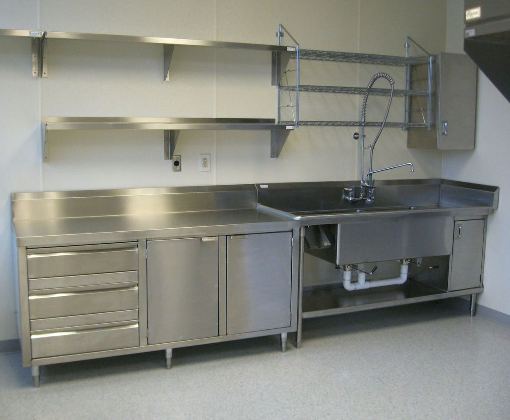
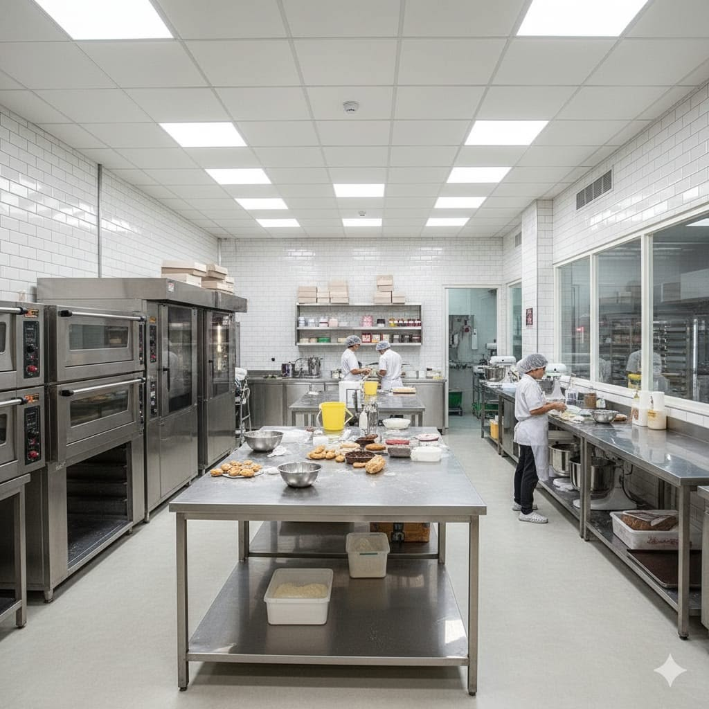
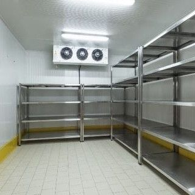

Mobiliário Inox · Bianchini Kitchen Pro
Mobiliário Inox
"Uma cozinha organizada não é detalhe. É o que separa uma equipe que produz de uma que improvisa."
O mobiliário é a espinha dorsal de qualquer cozinha profissional. É ele que define o fluxo, organiza os processos e determina se a sua equipe vai trabalhar com eficiência ou vai perder tempo improvisando a cada turno.
A linha de mobiliário Bianchini é fabricada sob medida em aço inox AISI 304 ou em outra liga a ser definida pelo Cliente. Cada peça é projetada para o seu espaço, o seu volume e o seu ritmo de produção. Sem adaptações, sem gambiarras, sem peças que não encaixam.
Produtos da linha
Mesas de preparo
Com ou sem espelho, com ou sem prateleira inferior, em medidas padrão ou sob medida. Tampo em inox 18/8, estrutura tubular reforçada, pés reguláveis com sapatas.
Esteira Transportadora de Roletes
Estrutura em aço inox AISI 304 ou outra liga a ser definido pelo Cliente, com perfis de reforço estrutural e contraventamento tubular. Roletes em PVC alimentício de alta resistência, pés tubulares com niveladores de altura em poliamida — adaptável a qualquer piso. Comprimento e largura sob medida para o fluxo da sua operação.
Estantes e prateleiras
Em inox tubular ou chapa, abertas ou fechadas, fixas ou móveis. Ideais para despensa seca, câmara fria e áreas de estoque próximo à produção.
Pias e cubas
Simples, duplas e triplas, embutidas ou sobre bancada. Profundidade e dimensões conforme a norma sanitária e o uso operacional específico.
Armários e gaveteiros
Com portas de correr, basculantes ou abatimento. Gavetas com corrediças telescópicas em inox. Sequências numeradas para controle de insumos.
Grelhas de Piso
Em aço inox AISI 304, com grelha superior perfurada ou barras planas, dimensionada para encaixe preciso em canaletas e ralos. Cesta de retenção de sujeiras, fácil remoção para higienização completa do piso. Resistente ao tráfego intenso de botas, carros e equipamentos — sem empenar, com opção sifonada, sem substituição frequente..
Fotos da linha

Conjunto de Mobiliário

Mesas largas para confeitaria

Estantes Perfuradas para Câmaras Frias
Cocção · Bianchini Kitchen Pro
Cocção
"Fogo no ponto certo, no tempo certo — é assim que uma cozinha gera lucro consistente."
A linha de cocção define a capacidade produtiva da sua cozinha. Equipamentos mal dimensionados criam gargalos invisíveis que custam caro no final do mês — turnos mais longos, desperdício de insumo, qualidade inconsistente.
A linha Bianchini foi dimensionada para quem não pode parar. Alto rendimento, uniformidade de temperatura e durabilidade que resiste ao uso intenso de segunda a domingo. Cozinhas que produzem mais, sem aumentar o time nem o custo de energia.
Produtos da linha
Fogões industriais
2, 4, 6 e 8 bocas, com ou sem forno inferior. Queimadores duplo-coroa em ferro fundido, válvulas de segurança, estrutura em inox AISI 304 em outra liga a ser definida com o Cliente.
Chapas e grelhas
A gás ou elétricas, lisas ou ranhuradas. Temperaturas de até 300°C, aquecimento uniforme em toda a superfície, capacidade de até 60 portões/hora.
Fritadeiras industriais
Com 1 ou 2 cestos, capacidade de 8 a 25 litros de óleo, termostato de alta precisão. Reduzem o consumo de óleo em até 30% frente a modelos convencionais.
Char-broilers
Grelhas a gás de alto desempenho com decks de ferro fundido. Ideais para proteínas em alta temperatura com marcação perfeita.
Fornos de pizza e pirôlise
Andares independentes, temperatura até 400°C, distribuição uniforme de calor. Capacidade de 2 a 6 pizzas por ciclo dependendo do modelo.
Salamandras e Calderões
Salamandras a gás para gratinados e finalizações. Calderões de 30 a 200 litros, inclinação mecânica, base encapsulada em inox.
Fotos da linha
Linha de cocção em operação
Chapa industrial com grelha
Refrigeração · Bianchini Kitchen Pro
Refrigeração
"Desperdício zero começa na câmara fria. Controle de temperatura é controle de custo."
Cada grau importa. A cadeia fria é uma das maiores fontes de perda em cozinhas profissionais — e também uma das mais fáceis de corrigir quando os equipamentos são dimensionados corretamente.
A linha de refrigeração Bianchini mantém a cadeia fria intacta — do recebimento ao preparo — com equipamentos dimensionados para o volume real da sua operação. Menos perda, mais aproveitamento, operação dentro da norma sanitária.
Produtos da linha
Câmaras frigoríficas
Modulares em painel sanduíche (EPS ou poliuretano), portas com borracha magnética, evaporadores de baixo ruído. Dimensionadas pelo volume diário de produção.
Refrigeradores verticais
De 1 a 4 portas, temperatura de 0 a 8°C, revestimento interno em inox 430, AISI 304 em outra liga a ser definida com o Cliente. Próprios para carne, laticínios, bebidas e mise en place.
Freezers verticais e horizontais
De -18 a -22°C, com sistema de descongelamento automático ou manual. Capacidade de 200 a 1.200 litros dependendo do modelo.
Balcões refrigerados
Com tampa de vidro curvo ou reto, iluminação interna LED, temperatura estabilizada. Ideais para exposição de frios, laticínios e sobremesas.
Saladetes
Mesas com tampa refrigerada para mise en place. Inserções GN 1/1 a 1/6, temperatura de 2 a 8°C, superfície de trabalho integrada.
Fabricadores de gelo
Capacidade de 20 a 500 kg/dia, gelo em cubo, escama ou tubo. Essenciais para bar, hotel, hospital e operações de bebidas.
Fotos da linha
Câmara frigorífica modular
Refrigeradores de 2 portas em inox
Saladete com mise en place
Bar · Bianchini Kitchen Pro
Bar
"Um bar bem estruturado transforma bebida em experiência — e experiência em ticket médio."
A estrutura física do bar determina a velocidade do serviço, o consumo médio por cliente e a experiência percebida. Um bar mal planejado cria filas, atrapalha o barman e reduz o faturamento mesmo em noites cheias.
A estrutura de bar Bianchini foi pensada para o serviço fluir: tudo no lugar certo, na altura certa, sem improvisar. Quando o bar funciona, o consumo aumenta e o cliente fica mais tempo. Resultado que aparece no caixa no mesmo dia.
Produtos da linha
Módulos de bar frontais
Balcões com frente em inox, vidro ou madeira naval. Tampo em granito ou inox. Integração com cuba, gaveteiro, prateleiras e refrigeração.
Estações de chopp
Com coluna de aço inox, cuba de gelo seco ou refrigerada, gavetas para CO2, suporte para chopeiras de 1 a 4 vías. Personalizável por marca.
Cubas e pias de bar
Em inox AISI 304 em outra liga a ser definida com o Cliente, dimensões padrão ou sob medida, com ou sem escorredor, torneira de coluna ou parede. Posicionadas para o fluxo do barman.
Apoios refrigerados under-bar
Refrigeradores sob bancada com 1 a 3 portas ou gavetas. Temperatura de 2 a 8°C. Essenciais para manter garrafas, frutas e insumos a postos.
Expositores de bebidas
Com iluminação LED colorida ou branca, prateleiras em acrílico ou inox, temperatura controlada. Aumentam o consumo por visuál direto ao cliente.
Backsplash e painel de bar
Painel traseiro em inox escovado ou espelhado, com prateleiras, iluminação embutida e suportes. Define a identidade visual do bar.
Fotos da linha
Balcão frontal de bar em inox
Estação de chopp com coluna inox
Painel traseiro com expositores
Distribuição & Buffet · Bianchini Kitchen Pro
Distribuição & Buffet
"O cliente come primeiro com os olhos. Uma linha de distribuição Bianchini transforma isso em venda."
A linha de distribuição é onde a produção encontra o cliente. Uma pista mal projetada provoca congestionamento, queda de temperatura, desperdício e impressão negativa — tudo ao mesmo tempo.
Buffets que mantêm a temperatura ideal, apresentam o alimento com elegância e permitem o serviço sem congestionamento. Cada detalhe projetado para valorizar o que está sendo servido e acelerar o fluxo do cliente.
Produtos da linha
Balcões de distribuição quentes
Com banho-maria elétrico ou a vapor, temperatura de 65 a 90°C. Capacidade GN 1/1 a 1/3. Estrutura em inox AISI 304 em outra liga a ser definida com o Cliente com painel de controle digital.
Pistas frias
Refrigeradas por expansão direta ou gelo, temperatura de 2 a 8°C. Para saládas, sobremesas, frios fatiados e itens de alto valor agregado.
Buffets térmicos modulares
Módulos encaixáveis em quente, neutro e frio. Permitem reconfigurar o layout de acordo com o cardápio do dia. Acabamento em inox polido ou acetinado.
Estufas e aquecedores
Para manter a produção aquecida antes do serviço. Temperatura controlada de 60 a 120°C, capacidade de 10 a 40 GN 1/1 conforme o modelo.
Réguas e suportes de apoio
Prateleiras e réguas estruturais que compõem a linha de distribuição. Dimensionadas para o tráfego real de clientes e operadores.
Lâmpadas e toldos de calor
Lâmpadas infravermelhas para manter pratos prontos aquecidos no ponto de serviço. Reduzem o desperdício e garantem a temperatura servida.
Fotos da linha
Pista quente com banho-maria
Pista fria para sobremesas e saládas
Carros & Transporte · Bianchini Kitchen Pro
Carros & Transporte
"Cada movimento desnecessário dentro da cozinha é tempo perdido. E tempo, na operação, é dinheiro."
O transporte interno é o elo silencioso da produção. Quando ele falha — ou simplesmente é inexistente — a equipe carrega, improvisa e perde tempo em cada turno.
A linha de transporte Bianchini elimina o improviso entre estações — da produção à distribuição. Fluxo organizado, menos esforço da equipe, mais velocidade no serviço. O tipo de eficiência que só aparece quando tudo está no lugar certo.
Produtos da linha
Carros de transporte abertos
2 a 4 prateleiras em inox, capacidade de 100 a 300 kg, rodas giratórias com trava dupla. Para distribuição de insumos, pratos e recipientes GN.
Carros-estufa
Com aquecimento elétrico integrado (220V), temperatura de 60 a 120°C, capacidade de 10 a 20 GN 1/1. Mantêm a produção quente até o momento do serviço.
Carros de bandejas
Para cozinhas de hospital, hotel e institucional. Suportes para bandeja 45x35 cm, capacidade de 10 a 30 bandejas, estrutura em inox AISI 304 em outra liga a ser definida com o Cliente.
Carrinhos de serviço
Para salão e quarto de hotel. Tampo em madeira, mármore ou inox, gavetas e prateleiras laterais, rodas silenciosas para piso duro ou carpete.
Plataformas móveis
Para movimentação de caixas e volumes pesados. Base em inox, rodas industriais de 5 polegadas, capacidade de até 500 kg.
Carros isotérmicos
Com isolamento térmico em poliuretano, fechamento hermético. Mantêm temperatura por até 4 horas sem fonte de energia externa.
Fotos da linha
Carro de transporte 4 prateleiras
Carrinho de serviço para hotel
Tecnologia & Equipamentos · Bianchini Kitchen Pro
Tecnologia & Equipamentos
"Tecnologia nas Cozinhas 4.0 não é luxo. É o que permite produzir mais, com menos gente, com consistência todos os dias."
A cozinha moderna não é mais um espaço de improviso. É uma linha de produção — e como tal, responde a equipamentos que automatizam processos, eliminam variáveis e entregam consistência independente de quem está operando.
Fornos que memorizam receitas, lavadoras que reduzem o ciclo, equipamentos que trabalham enquanto sua equipe faz o que só humanos fazem. Resultado mensurável desde a primeira semana de operação.
Produtos da linha
Fornos combinados
Com programação por receita, controle de umidade, sonda de temperatura interna. Capacidade de 6 a 40 GN 1/1. Reduzem o tempo de preparo em até 40%.
Lavadoras de louças
De capota, túnel ou frontal, capacidade de 500 a 4.000 pratos/hora. Ciclos de 60 a 120 segundos, temperatura de enxágue de 85°C conforme norma sanitária.
Processadores e cúteres
Capacidade de 2,5 a 60 litros, velocidades variáveis, lâminas de aço inox. Picam, fatiam, ralama e misturam em frações do tempo do preparo manual.
Batedeiras planetárias
De bancada (5 a 20 L) ou piso (30 a 60 L), com tigela em inox, três velocidades, kit batedor/gancho/raquete. Essenciais em padaria, confeitaria e cozinha.
Ultracongeladores
Reduzem a temperatura do alimento de +90 a -18°C em menos de 90 minutos. Eliminam a zona de risco sanitário e prolongam a vida útil do produto.
Cortadores e fatiadores
De frios, queijos, pães e legumes. Espessura regulável de 0 a 15 mm, lâmina em aço inox com afiação integrada, proteção de segurança.
Fotos da linha
Forno combinado em operação
Lavadora de louças industrial
Ultracongelador profissional
Exaustão & Ventilação · Bianchini Kitchen Pro
Exaustão & Ventilação
"Sem exaustão eficiente, nenhuma cozinha é aprovada. Com a Bianchini, você passa na primeira."
A exaustão é o sistema mais cobrado nas vistorias sanitárias e de bombeiros — e o mais ignorado no projeto. Uma coifa superdimensionada consome energia desnecessária. Uma subdimensionada cria calor, gordura e fumaça que tomam a cozinha.
A Bianchini projeta, fornece e instala sistemas de HVAC completos — utilizando equipamentos robustos, dimensionados corretamente, atendendo as Normas da Vigilância sanitária e corpo de bombeiros. Sem surpresa, tudo bem dimensionado para a sua necessidade.
Produtos da linha
Coifas industriais
Em chapa de aço inox 430, 304 em outra liga a ser definida com o Cliente, com filtros de gordura em alumínio ou inox, calha coletora e grelha de iluminação. Dimensionadas pelo calor gerado pelos equipamentos de cocção.
Sistemas de exaustão
Ventiladores centrifúgos de alta vazão, silenciosos e de baixa manutenção. Calculados pelo volume de ar necessário para cada configuração de cozinha.
Dutos em inox
Circulares ou retangulares em inox AISI 304 em outra liga a ser definida com o Cliente, soldados ou flangeados, com isolação térmica onde necessário. Conformes à NBR 15848.
Filtros e lavadores de gases
Filtros de carvão ativado para eliminação de odores, lavadores de gases para ambientes sem saída de duto ao exterior. Redução de até 95% de particulados.
Make-up de ar (insuflamento)
Reposição de ar externo para compensar o volume exauríodo. Necessário para manter pressão negativa e evitar infiltração de odores para o salão.
Projeto técnico e memorial
Cálculo de carga térmica, memorial descritivo, planta de HVAC com cotas e especificações. Pronto para anexar ao processo de alvará sanitário.
Fotos da linha
Coifa industrial sobre linha de cocção
Casa de máquinas com ventiladores